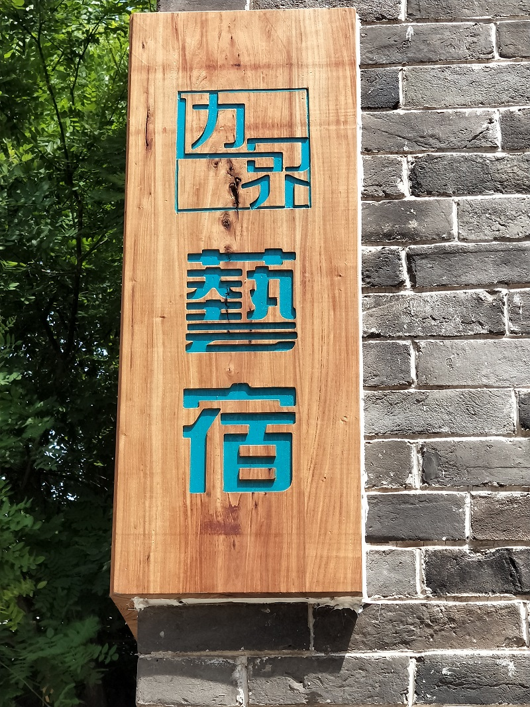

边界艺术馆：成为会员

作为中国第一家民营非营利公益美术馆，边界美术馆一直积极参与并致力于推动中国当代艺术的前进和发展。同时，开展国际间艺术和文化的交流合作，并不遗余力地推进国内外艺术家、艺术机构、艺术项目间的良性互动，也是我们十年来孜孜以求的目标和方向。 在过去的十年中，作为中国国内顶尖的当代艺术平台之一，边界曾与诸多在中国乃至世界范围内具有影响力的艺术家合作过个展；同时，学术研究也一直是我们关注的重点，曾在国内外业界获得巨大反响的今日文献展和中国当代版画学术展一直有条不紊地进行着。在对外交流方面，边界美术馆是中国第一家呈现意大利著名“贫穷艺术”大师雅尼斯·库奈里斯个展的美术馆，也是第一家参与发起威尼斯双年展平行展的民营美术馆；我们也曾邀请美、日、英等不同国家不同艺术领域的大师和先驱者以讲师身份参与今日艺术讲坛，将他们独特的经历和艺术视角分享给中国的艺术爱好者们。 除此之外，边界美术馆举办的当代艺术院校“大学生提名展”、“边界艺术奖”和携手马爹利艺术基金推出的“关注未来艺术英才”计划等艺术项目也一如既往并不遗余力地展示和支持着中国当代艺术家们。与梅赛德斯-奔驰、瑞信、马爹利等品牌建立的战略合作伙伴关系也成为与赞助商跨界合作的典范。 伴随着越来越多的展览和活动，作为一家非营利艺术机构，边界美术馆需要更多的资金以支援基础设施建设、提升服务质量并增加服务项目，因此我们一直在寻求合理的经济支持，以期给观众提供更高水平的展览和最佳的观展环境。幼苗尚需浇水方能福荫后人，如您愿意提供任何形式的支持与资助，每一分每一角我们都会用之以道；您将作为今日的一员，与我们一起见证今日这个十岁孩童的茁壮成长。